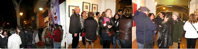
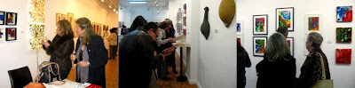

"Temps de dones": Inauguración 10 de diciembre de 2010
viernes, 10 de diciembre de 2010

La Galería O+O de Valencia presenta para estas fiestas navideñas el proyecto solidario “TEMPS DE DONES”. Una exposición colectiva en la que participan un total de 12 mujeres y que pretende ser un llamamiento contra la violencia de género. Parte de las ganancias que se produzcan en esta muestra irán destinadas a mujeres que sufren cualquier tipo de violencia.
La exhibición se caracteriza por la presencia de obras de pequeño formato y precio económico. De este modo, se pretende fomentar la venta de estas obras solidarias convirtiéndolas en el mejor regalo para estas Navidades.
Solidaridad, Arte Femenino y Navidades se unen en este proyecto de Oriente & Occidente Gestión Cultural, en busca de concienciar a la sociedad de uno de los problemas de nuestra actualidad. Gracias al trabajo artístico realizado por las artistas participantes en la muestra: Cuca Balaguer, Diana Franco, Consuelo Cardenal, Mirtya Huizzi, Faba, Xaro Bonilla, Paloma Delbreil, Mª Justa Rayego, Azahara Mortes, Ana Castañer, Mónica Cerrada, Itziar Nazabal.


(ver video)
Las obras realizadas por este grupo de artistas internacionales presentan un gran abanico de géneros y técnicas, pudiendo encontrar desde pinturas, esculturas o grabados hasta libros de autor o cajas de luz. Los materiales utilizados también son de los más variados y sugerentes, presentando impresiones sobre metacrilato, papel hecho a mano, esculturas de gress, piezas de madera, etc.
Cuca Balaguer nos presenta los resultados de su investigación sobre el papel con libros de autor y grabados impresos en papel hecho a mano. Los vibrantes colores inundan las pinturas de la artista mexicana Diana Franco. Las impresiones pigmentadas sobre papel y metacrilato en forma de polípticos son obra de la artista de proyección internacional Consuelo Cardenal. La artista venezolana Mirtya Huizzi nos muestra sus grabados realizados con la técnica collagraph. Faba desde París trae a esta exposición sus obras más autobiográficas, pinturas inéditas unidas a cajas de música. La artista Xaro Bonilla con sus esculturas y grabados nos adentra en su especial forma de vivir el Arte. Paloma Delbreil, artista que nos acerca una serie de esculturas en cristal de pequeño formato. Mª Justa Rayego presenta cajas de luz que incluyen grabados en su interior y grabados monotipos. Las esculturas de pared realizadas en gres por Azahara Mortes nos hablan de la mujer utilizando símbolos que aluden a temas como la maternidad. Ana Castañer deja de lado sus acuarelas para presentarnos sus nuevas pinturas llenas de color y materia. La pintura más reciente de Mónica Cerrada se torna sólida y sus colores se vuelven protagonistas. La pintora Itziar Nazabal nos sorprende con una composición formada por ocho cuadros donde el color estalla ante nosotros.
La exhibición se caracteriza por la presencia de obras de pequeño formato y precio económico. De este modo, se pretende fomentar la venta de estas obras solidarias convirtiéndolas en el mejor regalo para estas Navidades.
Solidaridad, Arte Femenino y Navidades se unen en este proyecto de Oriente & Occidente Gestión Cultural, en busca de concienciar a la sociedad de uno de los problemas de nuestra actualidad. Gracias al trabajo artístico realizado por las artistas participantes en la muestra: Cuca Balaguer, Diana Franco, Consuelo Cardenal, Mirtya Huizzi, Faba, Xaro Bonilla, Paloma Delbreil, Mª Justa Rayego, Azahara Mortes, Ana Castañer, Mónica Cerrada, Itziar Nazabal.




(ver video)

{kind=link}
{kind=link}
Las obras realizadas por este grupo de artistas internacionales presentan un gran abanico de géneros y técnicas, pudiendo encontrar desde pinturas, esculturas o grabados hasta libros de autor o cajas de luz. Los materiales utilizados también son de los más variados y sugerentes, presentando impresiones sobre metacrilato, papel hecho a mano, esculturas de gress, piezas de madera, etc.
Cuca Balaguer nos presenta los resultados de su investigación sobre el papel con libros de autor y grabados impresos en papel hecho a mano. Los vibrantes colores inundan las pinturas de la artista mexicana Diana Franco. Las impresiones pigmentadas sobre papel y metacrilato en forma de polípticos son obra de la artista de proyección internacional Consuelo Cardenal. La artista venezolana Mirtya Huizzi nos muestra sus grabados realizados con la técnica collagraph. Faba desde París trae a esta exposición sus obras más autobiográficas, pinturas inéditas unidas a cajas de música. La artista Xaro Bonilla con sus esculturas y grabados nos adentra en su especial forma de vivir el Arte. Paloma Delbreil, artista que nos acerca una serie de esculturas en cristal de pequeño formato. Mª Justa Rayego presenta cajas de luz que incluyen grabados en su interior y grabados monotipos. Las esculturas de pared realizadas en gres por Azahara Mortes nos hablan de la mujer utilizando símbolos que aluden a temas como la maternidad. Ana Castañer deja de lado sus acuarelas para presentarnos sus nuevas pinturas llenas de color y materia. La pintura más reciente de Mónica Cerrada se torna sólida y sus colores se vuelven protagonistas. La pintora Itziar Nazabal nos sorprende con una composición formada por ocho cuadros donde el color estalla ante nosotros.
Óscar García García